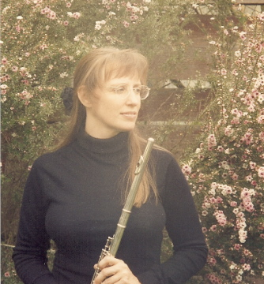

| Home | Bio | Reviews | Listen | Concert Schedule | Lessons | Payment | Contact |
| Holistic Lessons |
|
Each private lesson is tailored to fit the unique needs and support the spirit of the individual student. There are no judgments. Mistakes are welcomed as exciting gifts that allow the student to learn more about himself and his process. Being on this path of self-discovery, the student learns to trust his process, experience continuous success, and become so tuned-in to himself that he recognizes that he is indeed his own teacher. 
The Santa Cruz Sentinel quotes Purcell from an August 2001 interview: "It's about relaxing and never thinking that you're supposed to be some other place than you are right now." About her teaching: "Ms. Purcell's approach to the musical aspects of performance is well intermeshed with her analytical abilities in the technical aspects of flute playing. Most important is her consistent ability to enable her students to feel really good about themselves within a realistic appraisal of their musical development. The success of this approach has been demonstrated by these same students' continued interest and enthusiasm in their musical experiences." - Professor Emeritus Richard HahnFormer Milwaukee Symphony Flutist Past President, National Flute Association "Through Kathleen's instruction, I have become a polished flutist. She has prepared me for many musical endeavors and auditions that have built my confidence as a musician. She is not only an exceptional flutist but she has become a dear friend as well. She truly cares about her students and wants them to succeed." - Jamie MalonePurcell Flute Studios' student since 2002 "Kathleen has a passion and gift for teaching and gives great attention to detail. She is not limited to a single style of teaching, but rather tailors her approach to suit the learning style of the individual. Realistic feedback is given to her students in a positive way; in this way she is able to inspire students to work hard at music, and even more importantly instill a strong love for it." - Owen MeehanPurcell Flute Studios' student since 2005 "As a senior citizen I decided to play the flute and found my way to Kathleen. She made the initial challenge fun and interesting, and continues to help me advance my playing and achieve new goals. With her patient guidance I've participated in recitals and performed in the community. She is an excellent teacher and performer, and has become a valued friend." - Sandra Ferguson |